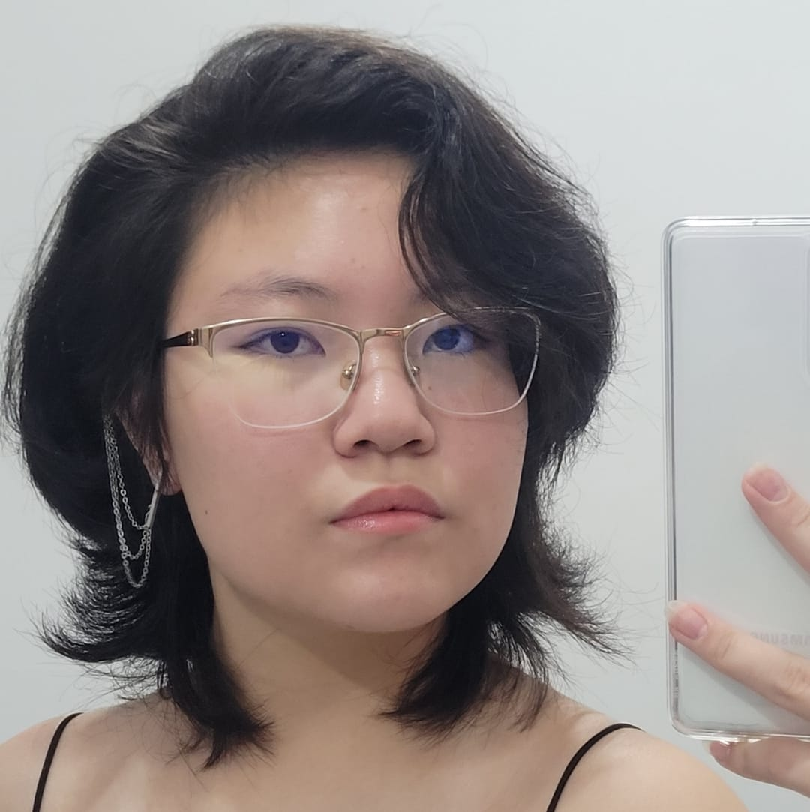

Sobre Nós
Cauã Martos
Pesquisa e Redação
Douglas Gomes
Programador

Érika Yoneyama
Pesquisa e Redação

Flavia Eduarda
Pesquisa e Redação

Kauã Looze
Pesquisa e Redação
Por que criamos este projeto?
O projeto Raízes da Amazônia nasceu da nossa vontade de dar visibilidade à riqueza cultural, histórica e ambiental da Região Norte do Brasil. Em um cenário de crescentes desafios socioambientais, queremos informar, educar e engajar a população por meio de uma plataforma acessível e confiável. Nossa missão é conectar pessoas às raízes do nosso país e incentivar a preservação do maior bioma brasileiro.